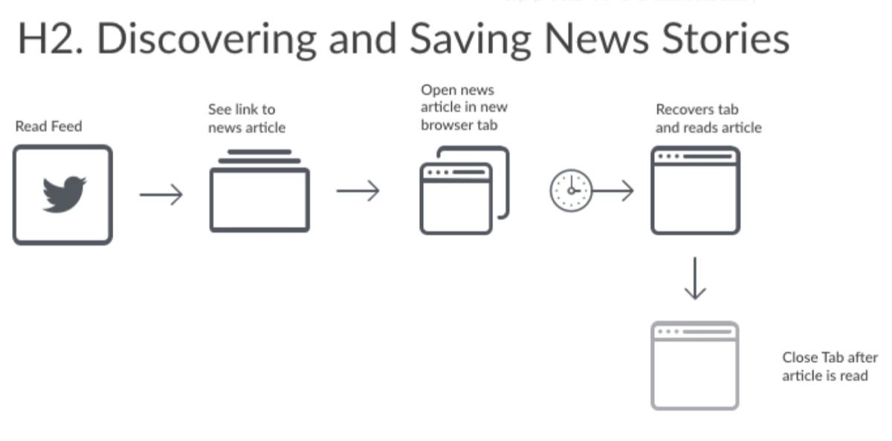
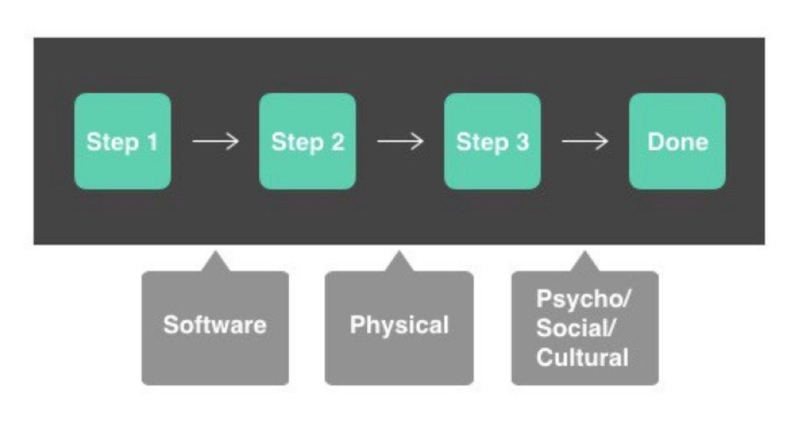
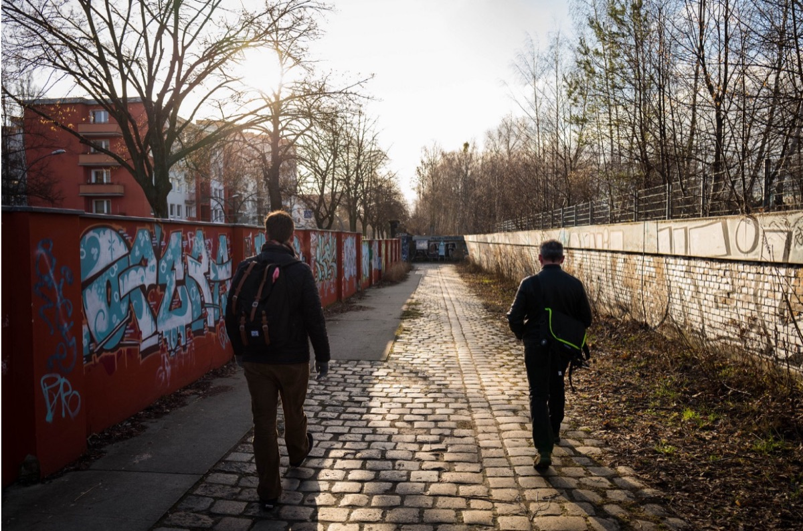

Firefox Workflow User Research in Germany

Munich Subway
Last year, the Firefox User Research team conducted a series of formative research projects studying multi-device task continuity. While these previous studies broadly investigated types of task flows and strategies for continuity across devices, they did not focus on the functionality, usability, or user goals behind these specific workflows.
For most users, interaction with browsers can be viewed as a series of specific, repeatable workflows. Within the the idea of a “workflow” is the theory of “flow.” Flow has been defined as:
a state of mind experienced by people who are deeply involved in an activity. For example, sometimes while surfing the Net, people become so focused on their pursuit that they lose track of time and temporarily forget about their surroundings and usual concerns…Flow has been described as an intrinsically enjoyable experience.¹
As new features and service integrations are introduced to existing products, there is a risk that unarticulated assumptions about usage context and user mental models could create obstacles for our users. Our goal for this research was to identify these obstacles and gain a detailed understanding of the behaviors, motivations, and strategies behind current browser-based user workflows and related device or app-based workflows. These insights will help us develop products, services, and features for our users.
Primary Research Questions
How can we understand users’ current behaviors to develop new workflows within the browser?
How do workflows & “flow” states differ between and among different devices?
In which current browser workflows do users encounter obstacles? What are these obstacles?
Are there types of workflows for specific types of users and their goals? What are they?
How are users’ unmet workflow needs being met outside of the browser? And how might we meet those needs in the browser?
Methodology
In order to understand users’ workflows, we employed a three-part, mixed method approach.
Survey
The first phase of our study was a twenty question survey deployed to 1,000 respondents in Germany provided by SSI’s standard international general population panel. We asked participants to select the Internet activities they had engaged in in the previous week. Participants were also asked questions about their browser usage on multiple devices as well as perceptions of privacy. We modeled this survey off of Pew Research Center’s “The Internet and Daily Life” study.
Experience Sampling
In the second phase, a separate group of 26 German participants were recruited from four major German cities: Cologne, Hamburg, Munich, and Leipzig. These participants represented a diverse range of demographic groups and half of the participants used Firefox as their primary browser on at least one of their devices. Participants were asked to download a mobile app called Paco. Paco cued participants up to seven times daily asking them about their current Internet activities, the context for it, and their mental state while completing it.
In-Person Interviews
In the final phase of the study, we selected 11 of the participants from the Experience Sampling segment from Hamburg, Munich, and Leipzig. Over the course of 3 weeks, we visited these participants in their homes and conducted 90 minute interview and observation sessions. Based on the survey results and experience sampling observations, we explored a small set of participants’ workflows in detail.
Product Managers participating in affinity diagramming in the Mozilla Toronto office.
Field Team Participation
The Firefox User Research team believes it is important to involve a wide variety of staff members in the experience of in-context research and analysis activities. Members of the Firefox product management and UX design teams accompanied the research team for these in-home interviews in Germany. After the interviews, the whole team met in Toronto for a week to absorb and analyze the data collected from the three segments. The results presented here are based on the analysis provided by the team.
Workflows
Based on our research, we define a workflow as a habitual, frequently employed set of discrete steps that users build into a larger activity. Users employ the tools they have at hand (e.g., tabs, bookmarks, screenshots) to achieve a goal. Workflows can also span across multiple devices, range from simple to technically sophisticated, exist across noncontinuous durations of time, and contain multiple decisions within them.

Example Workflow from Hamburg Participant #2
We observed that workflows appear to be naturally constructed actions to participants. Their workflows were so unconscious or self-evident, that participants often found it challenging to articulate and reconstruct their workflows. Examples of workflows include: Comparison shopping, checking email, checking news updates, and sharing an image with someone else.
Workflows Model

Based on our study, we have developed a general two-part model to illustrate a workflow.
Part 1: Workflows are constructed from discrete steps. These steps are atomic and include actions like typing in a URL, pressing a button, taking a screenshot, sending a text message, saving a bookmark, etc. We mean “atomic” in the sense that the steps are simple, irreducible actions in the browser or other software tools. When employed alone, these actions can achieve a simple result (e.g. creating a bookmark). Users build up the atomic actions into larger actions that constitute a workflow.
Part 2: Outside factors can influence the choices users make for both a whole workflow or steps within a workflow. These factors include software components, physical components, and pyscho/social/cultural factors.
Factors Influencing Workflows
While workflows are composed from atomic building blocks of tools, there is a great deal more that influences their construction and adoption among users.
Software Components
Software components are features of the operating system, the browser, and the specs of web technology that allow users to complete small atomic tasks. Some software components also constrain users into limited tasks or are obstacles to some workflows.
The basic building blocks of the browser are the features, tools, and preferences that allow users to complete tasks with the browser. Some examples include: Tabs, bookmarks, screenshots, authentication, and notifications.
Physical Components
Physical components are the devices and technology infrastructure that inform how users interact with software and the Internet. These components employ software but it is users’ physical interaction with them that makes these factors distinct. Some examples include: Access to the internet, network availability, and device form factors.
Psycho/Social/Cultural Factors
Psycho/Social/Cultural influences are contextual, social, and cognitive factors that affect users’ approaches to and decisions about their workflows.
Memory
Participants use memory to fill in gaps in their workflows where technology does not support persistence. For example, when comparison shopping, a user has multiple tabs open to compare prices; the user is using memory to keep in mind prices from the other tabs for the same item.
Control
Participants exercised control over the role of technology in their lives either actively or passively. For example, some participant believed that they received too many notifications from apps and services, and often did not understand how to change these settings. This experience eroded their sense of control over their technology and forced these participants to develop alternate strategies for regaining control over these interruptions. For others, notifications were seen as a benefit. For example, one of our Leipzig participants used home automation tools and their associated notifications on his mobile devices to give him more control over his home environment.
Other examples of psycho/social/cultural factors we observed included: Work/personal divides, identity management, fashion trends in technology adoption, and privacy concerns.
Using the Workflows Model
When analyzing current user workflows, the parts of the model should be cues to examine how the workflow is constructed and what factors influence its construction. When building new features, it can be helpful to ask the following questions to determine viability:
Are the steps we are creating truly atomic and usable in multiple workflows?
Are we supplying software components that give flexibility to a workflow?
What affect will physical factors have on the atomic components in the workflow?
How do psycho-social-cultural factors influence users’ choices about the components they are using in the workflow?

Trying to find the Mozilla Berlin office.
Design Principles & Recommendations
New features should be atomic elements, not complete user workflows.
Don’t be prescriptive, but facilitate efficiency.
Give users the tools to build their own workflows.
While software and physical components are important, psycho/social/cultural factors are equally as important and influential over users’ workflow decisions.
Make it easy for users to actively control notifications and other flow disruptors.
Leverage online content to support and improve offline experiences.
Help users bridge the gap between primary-device workflows and secondary devices.
Make it easy for users to manage a variety of identities across various devices and services.
Help users manage memory gaps related to revisiting and curating saved content.
Future Research Phases
The Firefox User Research team conducted additional phases of this research in Canada, the United States, Japan, and Vietnam. Check back for updates on our work.
References:
¹ Pace, S. (2004). A grounded theory of the flow experiences of Web users. International journal of human-computer studies, 60(3), 327–363.